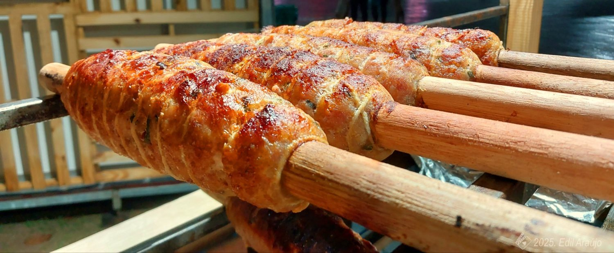

Uma explosão de sabor!
O Rojão de Ribeirão Grande tem um sabor sensacional!
O Rojão é uma iguaria da culinária caipira originária no município de Ribeirão Grande, na região sudoeste do estado de São Paulo. Uma receita criada desde as primeiras famílias que formaram o município.

É um prato a base de carne suína com sua receita mantida tradicionalmente a mais de 150 anos. Por essa grande importância, foi reconhecido como Patrimônio Cultural Imaterial de Ribeirão Grande, por fazer parte da história e cultura das famílias ribeirão grandenses e devido à visibilidade em que este prato típico agrega ao nome do município, promovendo seu reconhecimento e o aumento do fluxo de turistas.

Curiosidades: A tradição do Espeto de Rojão teve origem a partir das primeiras famílias da região no final do século XVIII. Viviam basicamente da agricultura de subsistência desenvolvendo uma maneira artesanal na preparação de alimentos feitas com o uso do pilão e o monjolo.
Era preparado em ocasiões especiais e festivas como em casamentos, páscoa, natal, etc, e assim passando de geração em geração como parte do saber gastronômico e cultural. Entre elas estava a fabricação da farinha de milho, beneficiamento de arroz ou café e o preparo da paçoca.
Antigamente a carne de porco era socada em pilão até formar uma massa homogênea. Em seguida era temperada com sal, pimenta e outros condimentos, e após um certo tempo era posta em um pedaço de madeira de capororoca e enrolada usando taboa. Em seguida levada ao braseiro que era feito no chão. Hoje o rojão é bastante difundido na região.
Mas a forma de preparo foi aprimorada ao longo dos anos por questões de higiene e de praticidade. Ao invés do pilão para socar a carne usa-se a máquina. A taboa foi substituída pelo barbante de algodão e a madeira rústica por madeira de eucalipto roliça como de um cabo de vassoura oriunda de reflorestamentos.